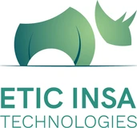
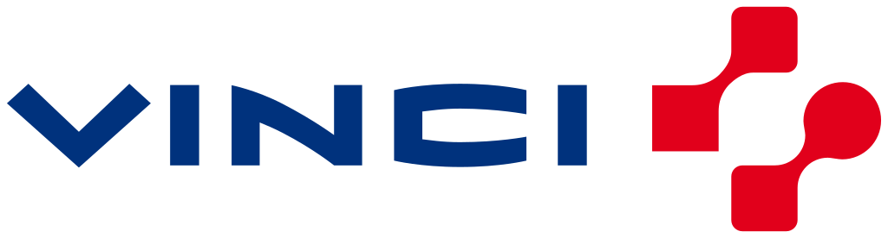
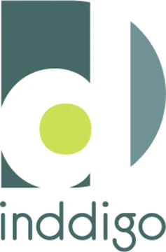
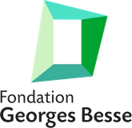
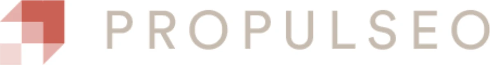
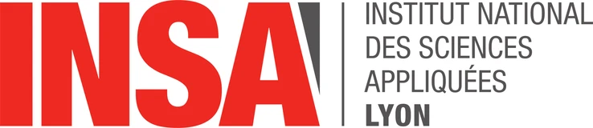

One thin band right under the hero, logos in grey that turn to colour on hover. Classic "trusted by" look, very discreet. Pauses on hover or keyboard focus; a PAUSE button stops it for good (accessibility rule: moving content must be pausable).






A black band with two rows moving in opposite directions. The top row is who I built things for or with; the bottom row is who supports me. Bolder and more "wow", and it says clearly what each logo means.
Fits the "model" story: the organisations are the data I was trained on. Each tile says the relationship in one line (internship, client via ETIC, scholarship…), so a recruiter never wonders whether VINCI hired me directly. Slower, readable, honest.
INTERNSHIP
Sapporo, Japan · 2026
JUNIOR ENTERPRISE
developer & consultant
CLIENT PROJECT
with ETIC INSA Technologies
CLIENT PROJECT
with ETIC INSA Technologies
SCHOLARSHIP
excellence, since 2023
LAUREATE
mentored by Asys
SCHOOL
Computer Science, 4th year
Home logo strip · three proposals. Delta Quest is still a placeholder: its logo is missing. J'ai PiGé is left out on purpose: it is a project, not an organisation (its logo stays on its project card). Every option pauses on hover and keyboard focus, has a PAUSE button, and shows a still list when the visitor asks for reduced motion.